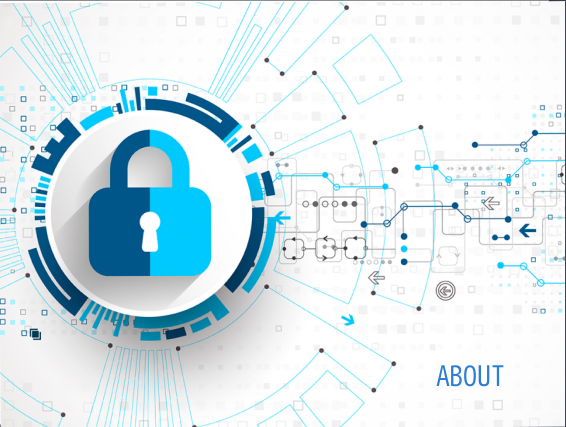

- 


La seguridad informática es una disciplina que se encarga
de proteger la integridad y la privacidad de la información
almacenada en un sistema informático. De todas formas, no
existe ninguna técnica que permita asegurar la inviolabilidad
de un sistema.
Un sistema informático puede ser protegido desde un punto de
vista lógico (con el desarrollo de software) o físico (vinculado
al mantenimiento eléctrico, por ejemplo). Por otra parte, las
amenazas pueden proceder desde programas dañinos que se instalan
en la computadora del usuario (como un virus) o llegar por vía
remota (los delincuentes que se conectan a Internet e ingresan
a distintos sistemas).
En el caso de los virus hay que subrayar que en la actualidad es
amplísima la lista de ellos que existen y que pueden vulnerar de
manera palpable cualquier equipo o sistema informático. Así, por
ejemplo, nos encontramos con los llamados virus residentes que son
aquellos que se caracterizan por el hecho de que se hallan ocultos
en lo que es la memoria RAM y eso les da la oportunidad de interceptar
y de controlar las distintas operaciones que se realizan en el
ordenador en cuestión llevando a cabo la infección de programas o
carpetas que formen parte fundamental de aquellas.
De la misma forma también están los conocidos virus de acción directa
que son aquellos que lo que hacen es ejecutarse rápidamente y extenderse
por todo el equipo trayendo consigo el contagio de todo lo que
encuentren a su paso.
Los virus cifrados, los de arranque, los del fichero o los sobreescritura
son igualmente otros de los peligros contagiosos más importantes que
pueden afectar a nuestro ordenador.
Entre las herramientas más usuales de la seguridad informática, se
encuentran los programas antivirus, los cortafuegos o firewalls, la
encriptación de la información y el uso de contraseñas (passwords).
Herramientas todas ellas de gran utilidad como también lo son los
conocidos sistemas de detección de intrusos, también conocidos como
anti-spyware. Se trata de programas o aplicaciones gracias a los cuales
se puede detectar de manera inmediata lo que son esos programas espías
que se encuentran en nuestro sistema informático y que lo que realizan
es una recopilación de información del mismo para luego ofrecérsela a un
dispositivo externo sin contar con nuestra autorización en ningún momento.
Entre este tipo de espías destaca, por ejemplo, Gator.
Un sistema seguro debe ser íntegro (con información modificable sólo por
las personas autorizadas), confidencial (los datos tienen que ser
legibles únicamente para los usuarios autorizados), irrefutable (el
usuario no debe poder negar las acciones que realizó) y tener buena
disponibilidad (debe ser estable).
De todas formas, como en la mayoría de los ámbitos de la seguridad, lo
esencial sigue siendo la capacitación de los usuarios. Una persona que
conoce cómo protegerse de las amenazas sabrá utilizar sus recursos de la
mejor manera posible para evitar ataques o accidentes.
En otras palabras, puede decirse que la seguridad informática busca
garantizar que los recursos de un sistema de información sean utilizados
tal como una organización o un usuario lo ha decidido, sin intromisiones.